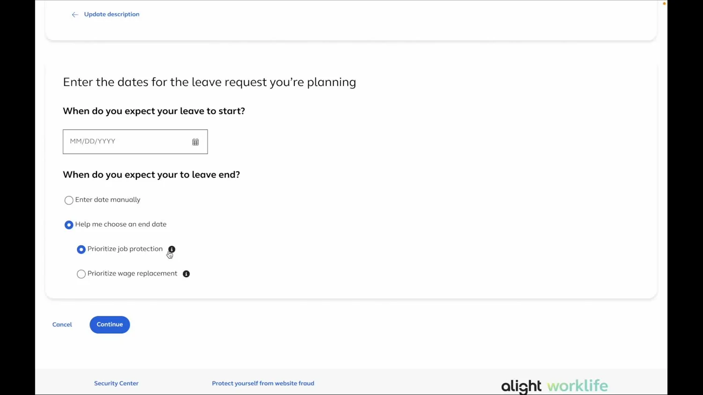
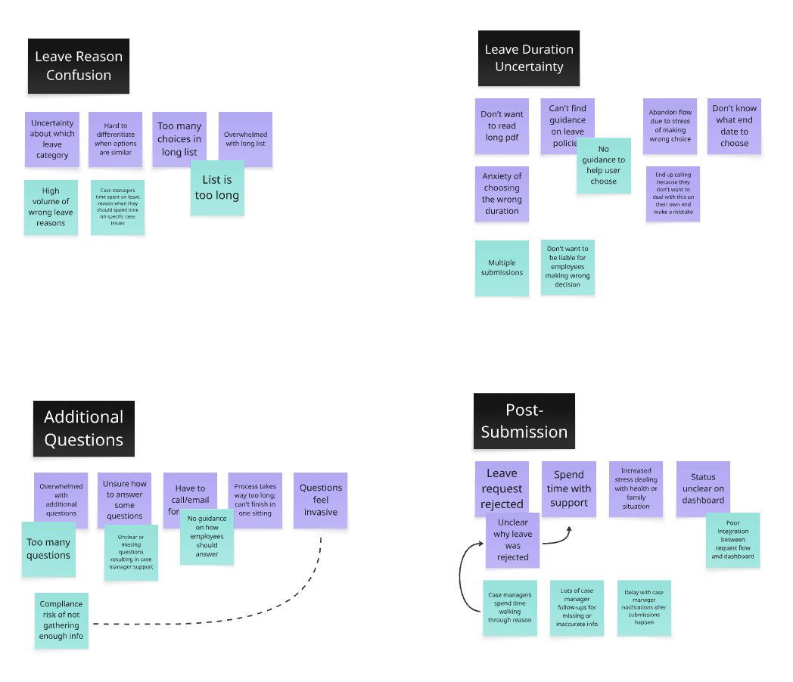
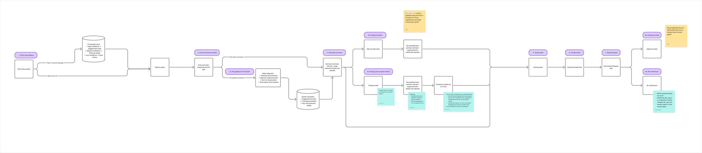
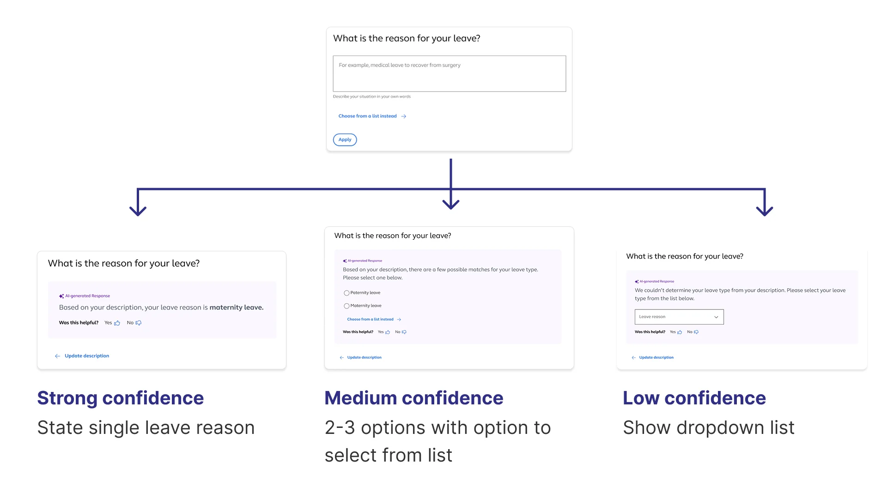
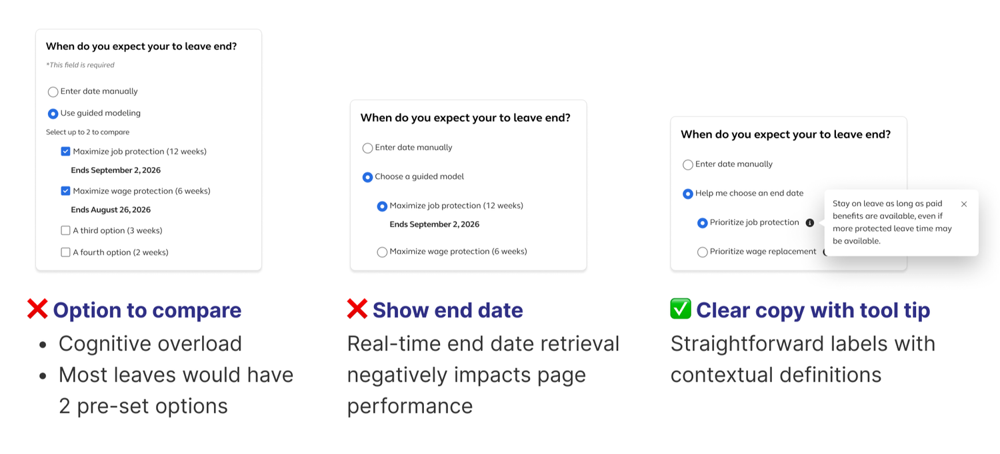
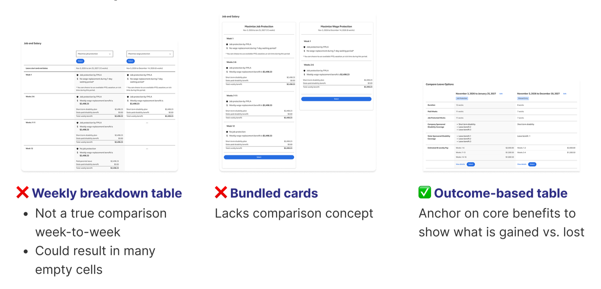

Leave of Absence Request
From
Anxiety
To
Confidence
To compete as a full-service benefits platform, the company expanded into leave management. However, the core experience of requesting a leave of absence created escalations from clients and negative feedback from employees.
- Role
- Product design lead: Shape design strategy while being hands-on
- Guidance to content designer and researcher
- Team
- Product manager, Engineering lead, User researcher, Content designer
- Timeline
- 1 quarter

Problem
Employees struggled with unclear guidance when requesting a leave of absence, resulting in rejections and multiple HR interactions, which added administrative burden to an already stressful situation. Common pain points included:
- Being overwhelmed with volume of info
- Uncertainty with providing incomplete info or making wrong choices
- Confusion on their leave’s impact on pay and benefits
Solution
The solution centered on the key friction areas around leave reason, end date selection, and benefits impact understanding.
Due to timeline and client complexity, the experience around answering additional contextual questions about the employee’s leave was deferred to a future phase of the project.
Smart Leave Reason Matching
Natural language input matches users with correct leave reason
Leave End Date Guidance
Pre-set options help users choose between scenarios
Benefits Comparison
Comparison of leave durations and impact on pay, insurance, and time off
Prototype

Process
Discovery
I worked with the PM to understand:
- Where do employees drop off in the Request a Leave flow?
- What are common reasons why employees call or email for support?
- What are common reasons for leave requests being rejected?
Primary research methods consisted of:
- CSAT surveys
- Interviews with clients at risk of not renewing the contract and employees who used leave management tool

Key User Takeaways
Goals
- Get quick approval so they can focus on what matters
- Peace of mind they’re covered with pay and benefits
- Avoid anxiety of pending approval
Pain Points
- Confusion about which leave type applies to their situation
- Unsure how long to take the leave
- Multiple back-and-forths after submission for clarification
- Increased stress while preparing for upcoming leave
User Flow
I mapped out a user flow based on the product requirements doc to use for initial discussion with the PM and engineering team, focusing on the leave reason, end date selection, and benefit impact steps.

Design Iterations
Leave Reason
Engineering team surfaced the use case of the AI-generated leave reason having various levels of confidence, which influenced design for various use cases and ways for users to “recover” from dead ends.

Leave End Date
Content design was crucial to the final design, balancing plain language with additional guidance without overwhelming the user.

I reframed the comparison screen to less literal about the weekly breakdown, and more on what users would care most. What would they gain or give up between the two durations?

Impact
The project’s value extended beyond the expected KPIs. It demonstrated how strong partnership with engineering and thoughtfulness behind the solution can drive better outcomes across cross-team collaboration and client relationships.
Prevented redesign delays due to early engineering involvement
Set example for an AI-embedded experience without forcing a chatbot
Decreased escalations from a high-risk client
Expected KPIs: % decrease in rejected requests, % increase in request submissions, and increase in Leaves CSAT
Challenges & Learnings
- Ground rationale in data for stakeholder buy-in: An exec was concerned with using natural language input for the leave reason, as his expectation was that most AI-supported guidance would be done through the chatbot. Framing the key problem on the leave reason and its trickle-down impact on the rest of the flow, along with supporting metrics on the volume of rejected requests and case manager tickets, helped get buy-in.
- Prioritize for majority of use cases staying cognizant of more complex edge cases: A handful of clients had very complex policies that created challenges with the pre-set leave end date options and corresponding benefits comparison view. We took those as edge cases rather than over-rotating on a solution that accommodated for outlier clients.
- Include engineering team upfront: Unlike typical projects where the engineering team was involved closer to final design handoff, the PM and I engaged the engineering team from day 1 so they had full context on the problem space. This helped surface feasibility challenges and new ideas early, creating quicker feedback loops for design iterations.